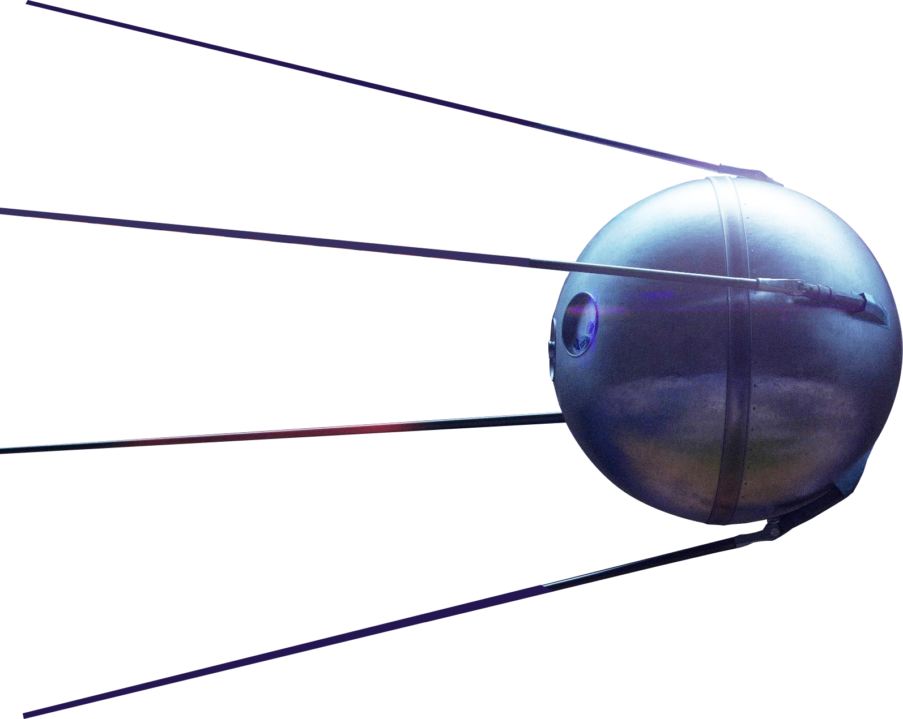
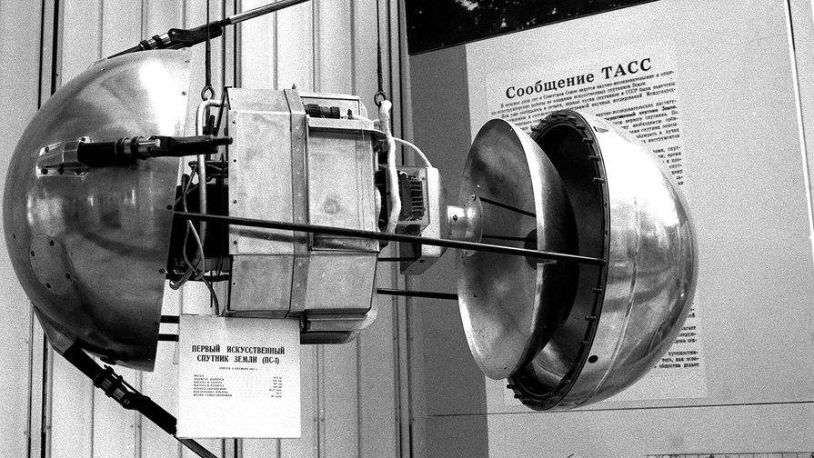
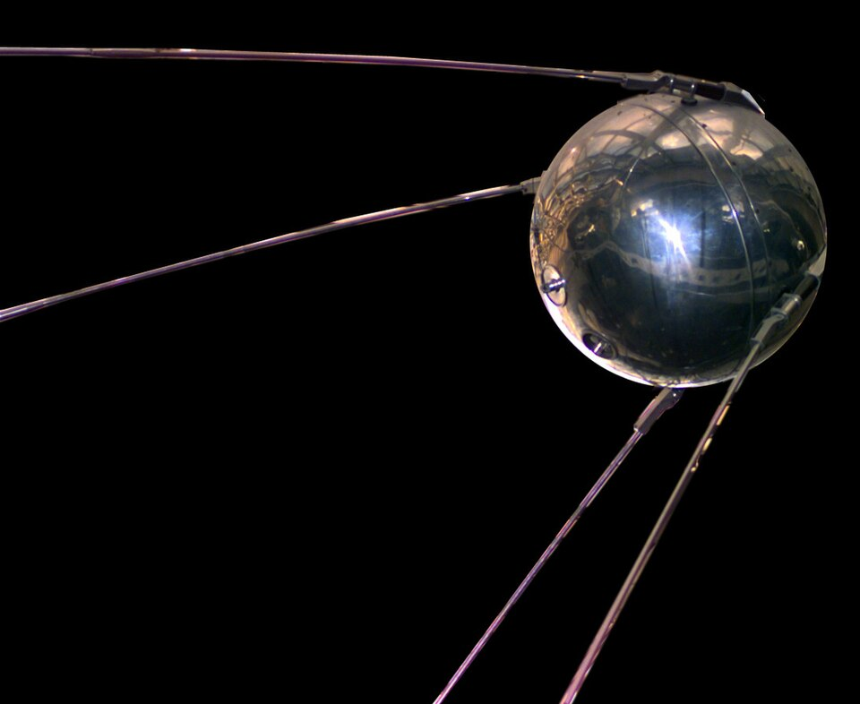

Первый в мире исскуственный спутник

«Спутник-1» — первый в мире искусственный спутник Земли, советский космический аппарат, запущенный на орбиту 4 октября 1957 года. Кодовое обозначение — «ПС-1» Над созданием спутника во главе с основоположником практической космонавтики С. П. Королёвым работали учёные М. В. Келдыш, М. К. Тихонравов, М. С. Рязанский и другие. Изначально рассматривались три варианта первого спутника: сложный научный, простейший с кабиной для животного и максимально упрощённый аппарат с радиопередатчиком. Чтобы успеть к Международному геофизическому году (1957–1958), было решено выбрать последний вариант — «ПС-1». Запуск был осуществлён с 5-го научно-исследовательского полигона Министерства обороны СССР «Тюра-Там» (получившего впоследствии открытое наименование космодром «Байконур») на ракете-носителе «Спутник», созданной на базе межконтинентальной баллистической ракеты «Р-7». Полёт «Спутника-1» длился 92 дня. За это время он совершил 1440 витков вокруг Земли. Из-за трения о верхние слои атмосферы спутник постепенно замедлялся, сошёл с орбиты и сгорел в плотных слоях атмосферы 4 января 1958 года. Запуск «Спутника-1» ознаменовал начало космической эры человечества.
